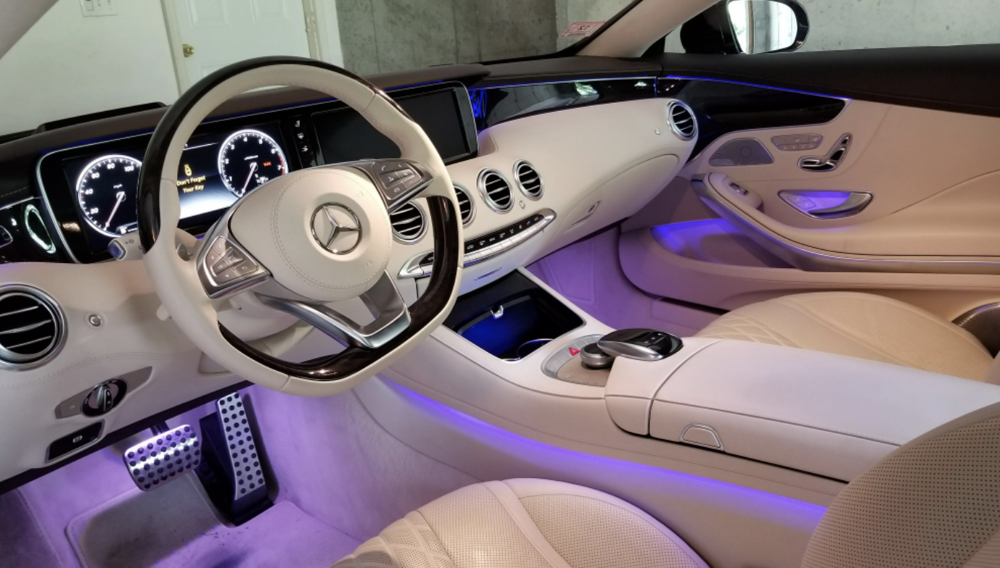

The Article Area
To determine the best car on our world is quiet complicated since many parts of the car are for someone important and for others not.
Pace
Some cars are very fast and reach over 120mph. Certain folks enjoy driving that fast.
Comfort

Some people rather prefer comfort than speed, they enjoy having comfy seats and a strong airconditioner.